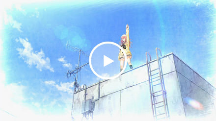
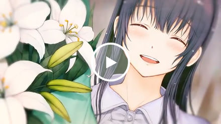
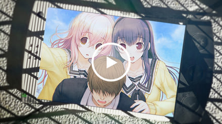

向日葵，是整个游戏中有些神秘的一个角色，虽说是跟心一同一个班的同学，但在楼顶事件之前，心一对这个女孩并无任何印象，葵自称是“受galgame游戏的神的派遣来到这个世界，是为了收集剧情CG，并打出happening而来”，一开始大家并不信，只以为是一个有妄想症的女孩罢了，葵整天跑到楼顶，高举着手机“嘟噜噜噜噜噜噜噜噜噜噜”，说是要与神沟通，不仅如此，葵似乎是一个没有人类感情的女生，而且在很多事情上表现出没有常识的感觉，有时候还做出一些惊人的举动。
即便如此，葵很单纯，而且善良的，在整个游戏中，葵没有要伤害任何人的想法，第一周目，葵在心一和美雪的帮助下，逐渐觉醒了作为人类的感情，葵从头到尾，都在不断的撮合着心一和美雪这对青梅竹马。
“如果我打出了全垒打，你们就在一起吧！”
为了心一和美雪能顺利在一起，本来没有打过一次棒球的葵与美雪和心一打赌道，于是无数次挥棒，直到体力不支，被心一和美雪叫停后才停止。
而实际上，葵真的是神派来的，来这里是真的为了收集剧情CG，为了葵和美雪能顺利在一起，葵在成功与神通信之后改变了世界，而这又促成了之后的很多事。
在第二周目葵线中，葵无可救药的爱上了男主，或者说是男主背后的玩家，也就是你，事实上这是不允许的。
因为她是整个世界最高意志，所有GalGame中女主角的集合体——“神”的代行者，就像玩家玩游戏体验路线，回收所有路线的CG一样，她，就是“神”在这个世界上“反向攻略”的道具，而她现在的姿态不过是“神”选出来在这个世界中最合适的造型罢了。
而她的任务，就是服从“神”的意志，在一次一次的轮回中攻略其他人。也许我们可以用更简单的说法概括——触发H-scene，回收CG，换取继续存在的价值。为此，她必须不择手段不计代价。
对于向日葵而言，这本没有什么问题可言——一个没有自主意识的人偶，一个工具，为了换取自己的存在，服从主人——“神”的命令。这就可以了。
然而你出现了，隐藏在那个无特征无特长路人一般男主角须须木心一的背后出现了。两个超脱于游戏世界中的存在，却偶然在一个世界中碰面，不过你并未察觉她身后的存在，而她则作为对方手中的棋子，用自己的能力画出了命运的走向；在这一轮中，她有意促成了你与美雪，却无意间埋下了你对她的好奇……
然后一切顺理成章的开始了，轻车熟路的你灵巧的避开了美雪的好感度选项，一路向着向日葵的路线方向前行，顺利的敲开了她的心扉，用你的温柔与体贴将她攻陷。而你错误的估计了两点：
一，看似并无异状的曾根美雪其实并不甘心被所谓的命运摆布。
二，看似无忧无虑百无禁忌的向日葵却早已被自己的命运紧缚。
作为“神”的代行者，一个回收CG的工具，她必须完成任务，那么她就必须和你——对，坐在屏幕前的你一样，在游戏中见一个爱一个，爱一个推一个。若要与你长相厮守就是违抗命令，就意味着再也无法回收新的CG，她就会被“神”废弃处理——也就是消失。
作为有着自己意志的“人”，她渴望着人的温暖，尤其是来自于你和她的朋友们，所以她珍视着你给她的一切，将那个猫猫发卡视若珍宝。所以她没法容忍自己背叛你，只能用“恋爱感情与肉体并无关联”这样的借口来自我催眠
而在这些背后，她却早已明白自己所作所为意味着什么，所以在她“出轨”的时候，她开始犹豫，她开始苦恼，她开始备受煎熬。她不过是想活下去，多体验一下来自你的温暖而已，可是为何这小小的愿景却要付出这样无情的代价？
于是，她“Bug”了，明明按照要求，她应该笑，应该快乐，却哭出了声，泪水止不住的淌出，她称这个现象是“Bug”，也许用我们通用的语言，这种情感应该叫做……爱。
当一切再也无可躲避的时候，她带着僵硬的笑容，试图平静的讲述原因——也许她早已习惯了这样的瞬间，她没有祈求原谅，因为她在潜意识中觉得自己不配获得原谅……
——然而你做到了，也许点那个选项的时候，你已经走过了很多个循环，亦或是真的愿意相信她，接受她，拯救她……但那不重要，重要的是，对她而言你是第一个这样做的人。
而对于她来说，这算不算幸福或是拯救，我们无从得知，不过曾根美雪的出现打断了这个恶性循环，遭到背叛的她在痛苦与绝望之中夺取到了和“神”交流的道具，进而重新规划了世界，用无限循环的囚笼将你囚禁，用神的力量将她从这个世界上抹消……
然而她并没有放弃，因为她最爱的人——你，还被困在里面。
对她而言，她也在承受着苦痛，曾根美雪对她的报复是无情的，并不是杀死，而是在美雪构筑的“特别牢房”中，如肉欲娃娃一般被蹂躏，无休无止。
在那个无限循环的世界的缝隙中，你还能时不时听到她无助呼救的声音——她在自身难保的状态下，还在用尽一切手段，想要联络到她的“神”，期望能够重置这个世界，来拯救你——就像你拯救她一样。
而最终当那个时刻来临，你得以重获自由，她得以重见天日，她第一点想到的，却不是对美雪的憎恨，或是对你展露委屈，而是带着安然的微笑，试图平静的表明自己的志愿——牺牲自己，牺牲已经破烂不堪满是“Bug”的自己，为你和美雪留下全新的，再不会混乱的世界，她的笑容不再僵硬，却带着决然，可是鬓角处的猫猫发卡不会撒谎——她对你的情感一如既往，即便离去，也希望能带着你送的礼物离开……
从此之后再不会有你和她和她的恋爱……只剩下你和她的恋爱——而这个“她”是她们中的谁，由你来决定……
不要去妄想能有什么不伤害到任何一个人，就能大家一起幸福的选项——事已至此，无可回头，如果你选择作弊，那是对美雪的不忠，更是对葵的亵渎。
但至少，在最后的时刻，请记住她，记住她的泪水，她的挣扎，她带着着泪水的“Bug”……
她的名字叫做向日 葵，Mukoi Aoi
阅读更多：向日葵(你和她和她的恋爱)
部分文字引自萌娘百科 ，文字内容使用【知识共享 署名-非商业性使用-相同方式共享 3.0】协议。
美雪，心一的青梅竹马，是从很久以前就喜欢心一的女生。
在我看来，美雪一开始对主角的喜欢是很正常的那种——如果能跟心一在一起，当然再好不过，可是如果无论如何，心一都没有响应，不为所动的话，美雪就放弃他了。
这一点在第一周目失败线中就有所体现，心一也喜欢美雪，但因为自卑，心一觉得自己配不上美雪，饶是葵给二人创造了无数的机会，却被怂的一批的心一，完美的躲过了，在那条线中，美雪最终放弃了心一，在长大后进军娱乐圈，成为了著名演员、明星，认识了另一位男明星，得到了属于自己的幸福。
但由于游戏剧情限制，如果第一周目不去攻略美雪，当美雪成为演员、认识另一个男明星、结婚后，男主心一的结局就是孤独终老的Bad ending了，无论多少次，只要你不攻略美雪，那就是孤独终老结局，这大概可以称之为游戏的一大败笔！
只是攻略美雪，是行不通的，要攻略美雪，必须让葵改变这个世界才行，却正是因为这“改变世界”，才促成了之后那么多的事。
在游戏一周目，葵改变世界之后的某天，葵用于跟神联系的手机，丢失了，而这部手机，恰恰被美雪所捡到。
直到这时，美雪才知道自己之前一直坚信着自己生存在“真实世界”中，说是最讨厌现实与虚幻分不清的少女，实际上自己就是游戏中一团数据，是真正意义上的分不清“现实”与“虚幻”。
葵给美雪下了诅咒：如果美雪不跟心一在一起的话，就无法获得幸福。
比起爱，幸福对美雪来说重要的多，坚信着自己可以掌握命运的少女，却无可奈何的顺从她所在的世界中“神”的安排，与须须木心一走到了一起，成了真正意义上的“命运的恋人”。
然而面对可笑的“命运”，她仍然想要一份真挚的真诚的永远不会遭到背叛的爱，即便已经知道了世界的真相，即使明白须须木心一不过是你——对，屏幕前坐着的你的马甲，你的分身。明白你的存在不过是在她所在的世界中走个过场，说着违心的甜言蜜语，尽情的享受着像她一样的女孩子的娇憨与痴情，然后弃若敝屣；仍然想要相信那一点点微小到几乎不可能的几率，希望你能遵守所说过的诺言——永远，永远爱着她，和她在一起……
然而到了第二周目，你选择了葵，明明已经改变了别人的人生，你却和别人在一起，把上一周目的誓言选择性遗忘，她终于坏掉，唱着生日歌，挥舞着球棒，作为对你二周目选择了葵、你背叛了她的处罚，作为她痛苦、绝望的象征，将你在她世界中的分身——须须木心一，连同你的新欢，一起砸得粉碎！
然后你……对，坐在屏幕前的你，被她关入了无限循环，没有出口，甚至再也无法Save/Load的次元囚笼之中，对于你而言，这是难以置信难以理解的行为，而对于她来说，这是她最后的挽留手段。隔绝了你与“神”的联系，构筑出只属于你们两人的世界，抹消了第三者的存在，一点一滴的日常无限循环，不需要有什么惊天动地海誓山盟，但是仍然有淡淡的甜蜜的味道——有你和她在一起的日常，这就是她所要求的全部……
——可你并不满足。
你激怒她，用恶毒的言语冰冷的态度拒绝她，纵然是演技出众的她也无法维持脸上的面具，即使几近疯狂，她也不过只是个女孩子，外表的坚强却掩盖不了内心的脆弱，被你抢走了逃离困境的钥匙，她彻底疯狂了，用球棒砸开了你藏身的厕所的门，而在给你致命一击之前，她早已泪流满面——相较于你的憎恨，她更怕你会离开……
你欺骗她，用虚假的顺从与甜言蜜语安抚她，她小心警惕，不愿轻信，然而最终却还是忍不住对你敞开心房，小心翼翼的迎合你的喜好，对你的离开担惊受怕，对你而言，你有整个世界，你有无数选择，而她，在出现在这个世界的时候，她的命运已经固定——成为你的恋人，获得幸福，或者平凡的度过一生——她不在乎平凡或者所谓的幸福，因为对她而言唯有你才是最重要的人，只要有你在，就足够了——因为她，只有你。
最终选择的时刻还是会到来，不论是就此沉醉于她的牢笼或者说爱巢之中也好，还是费心计算出那一长串代码，掌控重置整个世界的力量也罢，在你的面前，她，始终是她。
执着，天真，痴情，会等着你一周，一个月，一年，十年的她。
即便只是一团数据，她仍然是敢于反抗“神”，反抗坐在屏幕前的你的存在。
只是期望着，哪怕有那么一刻，你能视她为一个真正的女孩子。
只为了一个诺言而努力，而坚守，而付出一切。
“——要一直一直和我在一起”
她的名字叫做曾根 美雪，Sone Miyuki
阅读更多：曾根美雪
部分文字引自萌娘百科 ，文字内容使用【知识共享 署名-非商业性使用-相同方式共享 3.0】协议。
一个平凡得不能再平凡的男主角·心一，跟学校的校花美雪是青梅竹马，但心一和她已经很久没有联系了，因为心一他不想引人注目，于是作为一个普通的同学，度过了平凡的日子。有一天，他的好友雄太郎把他叫到屋顶，遇到了班里的电波女·葵。“要，哔哩哔哩吗？”葵突然说出这么一句话，还对心一说了不得了的事。此时碰巧在场的美雪帮助了心一，事情总算结束，但那之后，心一还是经常遇到，那个叫葵的少女。
葵莫得朋友，也莫得感情，为了教她与人相处的方法，心一向美雪寻求帮助，三个人度过了很长的时间，随着时间的流逝，葵逐渐觉醒了作为人类的感情，另一方面，美雪也恢复了被她一直强压下去的，从小就对心一的喜欢的感情，三个人的距离又渐渐缩短了.三个人好不容易成为了朋友，但关系，却日益纠结......
1
第一个PV
2
第二个PV
3
OP